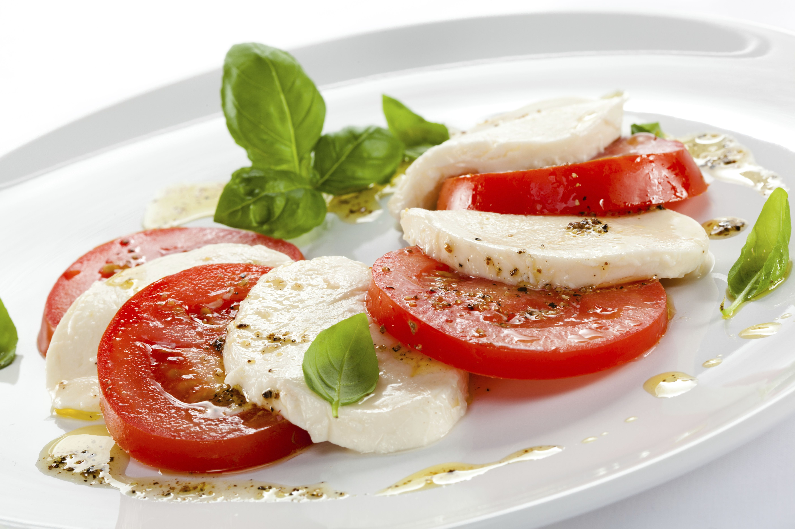
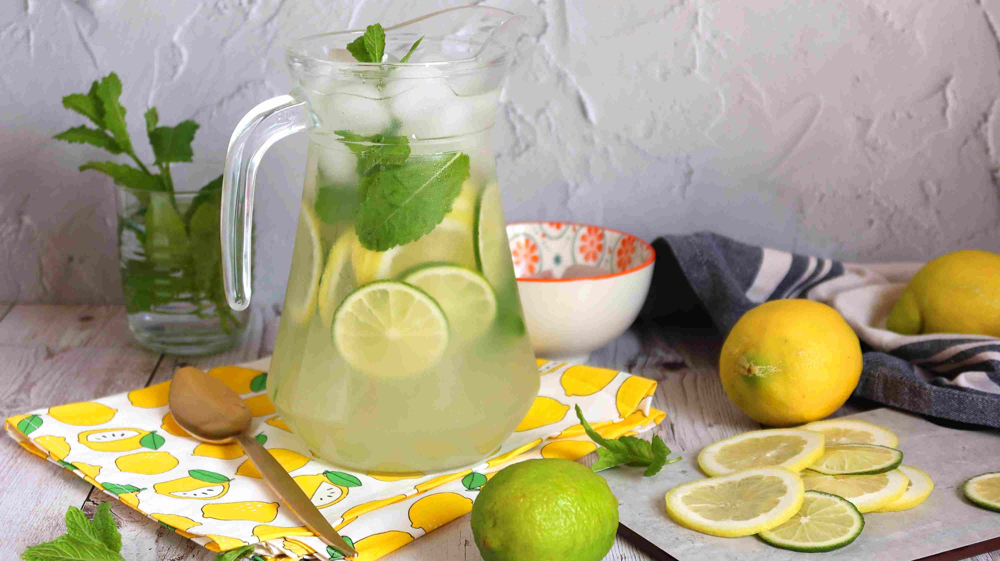

Receta 1
Ensalada de tomate y queso

Pasos:
- Cortar 2 tomates en cubos.
- Agregar queso en cubitos.
- Condimentar con aceite de oliva, sal y orégano.
- Mezclar y servir frío.
Receta 2
Limonada casera

Pasos:
- Exprimir 2 o 3 limones en un vaso grande.
- Agregar agua fría.
- Endulzar con azúcar o miel a gusto.
- Servir con hielo.
Receta 3
Mascarilla de miel

Pasos:
- Mezclar 1 cucharada de miel con unas gotas de limón.
- Aplicar sobre el rostro limpio.
- Dejar actuar 10 a 15 minutos.
- Enjuagar con agua tibia.